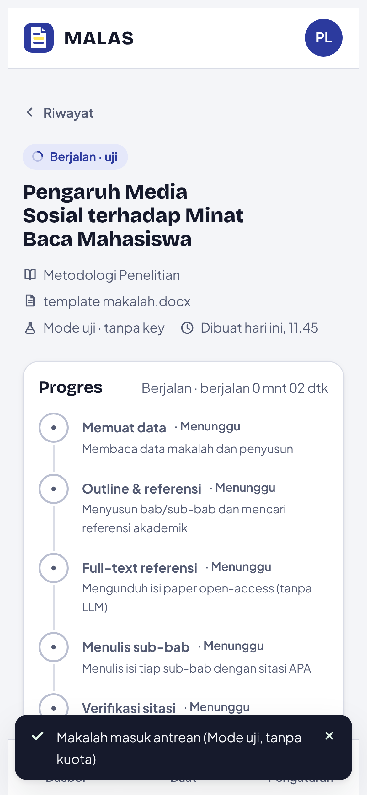
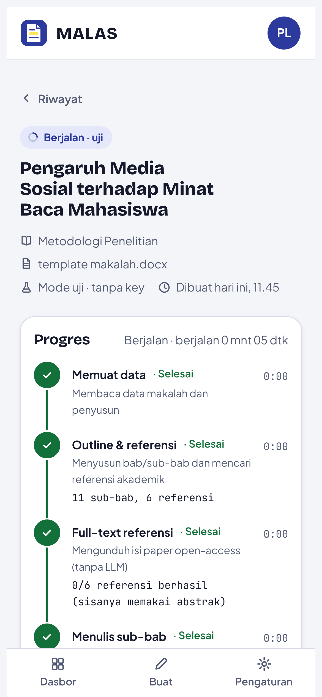
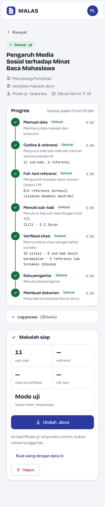

<!doctype html>
<html lang="id">
<head>
<meta charset="utf-8">
<meta name="viewport" content="width=1080">
<title>MALAS Promo v4</title>
<!--
  Video promo vertikal MALAS v4 (1080x1920, 30 fps, 30,7 dtk = 44 ketukan @ 86 BPM, loop). Sama dengan v3 kecuali ending (CTA).
  Audio disintesis terpisah oleh audio.py dari window.EVENTS (lihat build.sh).
  Deterministik: window.renderFrame(tMs) menghitung seluruh tampilan dari t.
  ?play=1 -> pratinjau realtime; ?t=8.5 -> satu bingkai.
  Aset di ./assets adalah tangkapan layar ASLI aplikasi MALAS (Mode uji) dan halaman .docx asli
  hasil pipeline MALAS (MALAS_MOCK=1) yang dirender LibreOffice. Font self-host di ./fonts.
-->
<style>
@font-face{font-family:"Bricolage";src:url(fonts/bricolage-grotesque-latin-wght-normal.woff2) format("woff2");font-weight:200 800;font-display:block}
@font-face{font-family:"Jakarta";src:url(fonts/plus-jakarta-sans-latin-600-normal.woff2) format("woff2");font-weight:600;font-display:block}
@font-face{font-family:"Jakarta";src:url(fonts/plus-jakarta-sans-latin-700-normal.woff2) format("woff2");font-weight:700;font-display:block}
@font-face{font-family:"Jakarta";src:url(fonts/plus-jakarta-sans-latin-800-normal.woff2) format("woff2");font-weight:800;font-display:block}
@font-face{font-family:"JBMono";src:url(fonts/jetbrains-mono-latin-700-normal.woff2) format("woff2");font-weight:700;font-display:block}
@font-face{font-family:"Carlito";src:url(fonts/Carlito-Regular.ttf) format("truetype");font-weight:400;font-display:block}
@font-face{font-family:"Carlito";src:url(fonts/Carlito-Bold.ttf) format("truetype");font-weight:700;font-display:block}
:root{
  --bg:#f4f5f8; --surface:#fff; --surface-2:#eceef4; --ink:#161a2c; --muted:#545b73; --line:#d9dce6; --line-strong:#b9bed0;
  --accent:#2c3a9e; --accent-soft:#e5e8fa; --mark:#ffe55c; --mark-ink:#1d1a05; --margin-red:#e0607a;
}
html,body{margin:0;background:#000}
#stage{position:relative;width:1080px;height:1920px;overflow:hidden;background:var(--bg);font-family:"Jakarta",sans-serif;color:var(--ink);-webkit-font-smoothing:antialiased}
.tr{position:absolute;will-change:transform,opacity}
/* v3: teks ~25% lebih besar. Dua ukuran per adegan: judul 130 (hook 150, DRAF 160, tagline 144) dan kecil 58-62 */
.hd{left:84px;width:860px;margin:0;font:800 130px/1.0 "Bricolage";letter-spacing:-.035em}
.hd .a{color:var(--accent)}
.on-blue{color:#fff}
.sm{font:700 58px/1.2 "Jakarta"}
.pill{display:inline-flex;align-items:center;gap:12px;padding:12px 30px 15px;border-radius:999px;font:700 56px/1.1 "Jakarta";white-space:nowrap}
.pill.ex{box-shadow:0 10px 24px -8px rgba(22,26,44,.45)}
.pill.ex{background:var(--ink);color:#fff}
.mk{background:var(--mark);color:var(--mark-ink);padding:0 .08em;border-radius:.08em}

/* ---- jendela pengolah kata (generik, tanpa merek) ---- */
.wp{position:absolute;background:#f3f4f6;border-radius:22px;overflow:hidden;border:2px solid #c9ccd4;
  box-shadow:0 30px 60px -20px rgba(22,26,44,.35),0 8px 18px rgba(22,26,44,.10);font-family:"Carlito";color:#2b2f38}
.wp .tb{height:54px;display:flex;align-items:center;justify-content:center;position:relative;background:#fbfbfc;border-bottom:1px solid #e1e3e8;font-size:27px}
.wp .tb .dots{position:absolute;left:20px;top:18px;display:flex;gap:10px}
.wp .tb .dots i{width:16px;height:16px;border-radius:50%;background:#c9ccd4;display:block}
.wp .tabs{height:46px;display:flex;align-items:flex-end;gap:30px;padding:0 26px;background:#fbfbfc;font-size:25px;color:#4a4f5c}
.wp .tabs span{padding-bottom:9px;border-bottom:4px solid transparent}
.wp .tabs span.on{color:var(--accent);border-color:var(--accent);font-weight:700}
.wp .tools{height:86px;display:flex;align-items:center;gap:14px;padding:0 20px;background:#fbfbfc;border-bottom:1px solid #dcdfe5;font-size:23px}
.wp .box{height:42px;border:1.5px solid #c4c8d0;border-radius:7px;background:#fff;display:flex;align-items:center;padding:0 10px;white-space:nowrap}
.wp .btnI{width:40px;height:42px;display:flex;align-items:center;justify-content:center;font-weight:700;font-size:26px;border-radius:7px}
.wp .sep{width:1.5px;height:50px;background:#dcdfe5}
.wp .sty{height:62px;padding:0 14px;border:1.5px solid #dcdfe5;border-radius:8px;background:#fff;display:flex;flex-direction:column;justify-content:center;line-height:1.05}
.wp .sty b{font-size:22px}.wp .sty small{font-size:17px;color:#7a7f8c}
.wp .ruler{height:28px;background:#eef0f3;border-bottom:1px solid #dcdfe5;position:relative;overflow:hidden}
.wp .area{position:absolute;left:0;right:0;background:#dfe2e7;overflow:hidden}
.wp .stack{position:absolute;left:0;top:0;transform-origin:0 0}
.wp .pg{position:absolute;background:#fff;box-shadow:0 2px 3px rgba(0,0,0,.12),0 10px 26px rgba(0,0,0,.10)}
.wp .pg img{display:block;width:100%;height:100%}
.wp .sb{position:absolute;left:0;right:0;bottom:0;height:44px;background:#f0f1f4;border-top:1px solid #dcdfe5;display:flex;align-items:center;gap:18px;padding:0 20px;font-size:23px;color:#4a4f5c}

/* ---- peramban generik (tanpa merek) ---- */
.br{position:absolute;background:#fff;border-radius:22px;overflow:hidden;border:2px solid #c9ccd4;box-shadow:0 20px 40px -18px rgba(22,26,44,.3)}
.br .strip{height:66px;background:#e6e8ee;position:relative}
.br .t{position:absolute;bottom:0;height:52px;border-radius:12px 12px 0 0;display:flex;align-items:center;gap:10px;padding:0 0 0 14px;box-sizing:border-box;font:600 24px "Jakarta";color:#3a3f4d;white-space:nowrap;overflow:hidden}
.br .t.on{background:#fff}
.br .t i{flex:none;width:22px;height:26px;border-radius:4px;display:block}
.br .t.off::after{content:"";position:absolute;right:0;top:14px;bottom:14px;width:2px;background:#c4c8d2}
.br .addr{height:62px;display:flex;align-items:center;padding:0 18px}
.br .addr div{flex:1;height:42px;border-radius:21px;background:#eef0f4}

/* ---- ponsel ---- */
.phone{position:absolute;background:#11131c;border-radius:96px;padding:14px;box-sizing:border-box;
  box-shadow:0 40px 80px -30px rgba(22,26,44,.55),inset 0 0 0 3px #2a2e3b}
.phone .scr{position:relative;width:100%;height:100%;border-radius:82px;overflow:hidden;background:var(--bg)}
.phone .island{position:absolute;left:50%;top:18px;width:150px;height:44px;margin-left:-75px;border-radius:22px;background:#000;z-index:9}
.phone .sbar{position:absolute;left:0;right:0;top:0;background:#fff;z-index:8}
.phone .layer{position:absolute;left:0;top:0;width:100%;height:100%;overflow:hidden}
.phone .page{position:absolute;left:0;top:0;width:100%;transform-origin:0 0}
.phone .page img{display:block;width:100%}
.tap{position:absolute;width:84px;height:84px;margin:-42px 0 0 -42px;border-radius:50%;background:rgba(22,26,44,.28);border:4px solid #fff;box-sizing:border-box;z-index:20}

/* ---- maskot (turunan Mascot.tsx) ---- */
.masc{position:absolute;overflow:visible}
.masc .o{stroke:var(--ink);stroke-width:3;stroke-linecap:round;stroke-linejoin:round}
.masc .sheet{fill:#fff}.masc .nf{fill:none}
.masc .margin{stroke:var(--margin-red);stroke-width:3;stroke-linecap:round}
.masc .cheek{fill:var(--margin-red);opacity:.45}.masc .hl{fill:var(--mark)}
.masc .z{fill:none;stroke:#fff;stroke-width:3;stroke-linecap:round;stroke-linejoin:round}
</style>
</head>
<body>
<div id="stage"></div>
<script>
(function(){
"use strict";
/* ===== tempo: semua waktu adegan jatuh di ketukan / setengah ketukan musik ===== */
const BPM=86.02, B=0.6975;             // 1 ketukan (detik)
const FPS=30;
const LOOP_IN=0.5;                     // hook masuk 0,5 dtk sebelum akhir (loop mulus)
const fr=x=>Math.round(x*FPS)/FPS;     // semua peristiwa jatuh tepat di batas bingkai (sinkron SFX)
const T=fr(44*B);                      // v4: 44 ketukan = 30,7 dtk = 921 bingkai (v3: 40 ketukan)
const b=n=>fr(n*B);                    // ketukan -> detik (dibulatkan ke bingkai, selisih <= 17 ms dari ketukan musik)
// batas adegan (ketukan): hook 0-4, A 4-8, B 8-12.5, C 12.5-18, D 18-23.5, E 23.5-29, F 29-33.5, G 33.5-40
// v4: 0-20 dtk sama dengan v3; ending = F (callback 14 tab) -> G (tagline) -> EC (end card) -> loop
const SC={A:b(4),B:b(8),C:b(12.5),D:b(18),E:b(23.5),F:b(29),G:b(33),EC:b(37),END:fr(T-LOOP_IN)};
const stage=document.getElementById('stage');
const clamp=(x,a=0,c=1)=>Math.min(c,Math.max(a,x));
const P=(t,a,d)=>clamp((t-a)/d);
const lerp=(a,c,x)=>a+(c-a)*x;
const outCubic=x=>1-Math.pow(1-x,3);
const inCubic=x=>x*x*x;
const inOut=x=>x<.5?4*x*x*x:1-Math.pow(-2*x+2,3)/2;
const outBack=(x,s=1.7)=>{const c=s+1;return 1+c*Math.pow(x-1,3)+s*Math.pow(x-1,2);};
const blink=t=>Math.floor(t*2.2)%2===0;
const $=(s,r=stage)=>r.querySelector(s);
const $$=(s,r=stage)=>Array.from(r.querySelectorAll(s));
const f2=n=>n.toFixed(2);
function el(html){const d=document.createElement('div');d.innerHTML=html.trim();const e=d.firstElementChild;stage.appendChild(e);return e;}

/* ===== peristiwa (sumber kebenaran untuk sinkron SFX di audio.py) ===== */
const EV={
  slam:b(0.5),                         // "0 kata." menghantam
  typeStart:fr(SC.A+0.62), typeEnd:fr(SC.B-0.25),
  modeUji:fr(SC.B+1.55),               // cincin + centang Mode uji
  tapBuat:fr(SC.C-0.5),                // ketuk "Buat makalah"
  step1:fr(SC.C+0.95),                 // stepper: 3 tahap selesai
  done:fr(SC.C+1.75),                  // "Selesai" / Makalah siap
  tapUnduh:fr(SC.C+3.05),              // ketuk "Unduh .docx"
  swipe:fr(SC.D+2.85),                 // stabilo menggores sitasi
  stamp:fr(SC.E+0.62),                 // DRAF dicap
  land:fr(SC.EC+0.5),                  // maskot mendarat di atas tombol
  press:b(40),                         // tombol "Coba gratis" ditekan (ketukan 1 bar terakhir: akor Fmaj7 mendarat)
  note1:b(39.5),                       // nada naik 1 (C5), setengah ketukan sebelum tekan
};
// ketukan tombol per huruf: batas glif kanan (pt) diukur dari tangkapan layar asli (ui-buat.png)
const L1=[63.3,73,82,92.3,101.7,108,116,125.3,'_',141,151.7,162,165.7,174.7,'_',188,198.3,206.7,210,219.3,223,'_',232,241.7,247.7,256,265,275.7,285,296,'_'];
const L2=[66,70,79,88,94.3,'_',108.3,117.3,127,135.7,'_',151.7,161,170.3,179.3,187.7,191,199.7,212.7,220.7];
const KEYS=[]; {let last=55,line=1;
  const n=L1.length+L2.length; let seed=7;
  const rnd=()=>{seed=(seed*1103515245+12345)%2147483648;return seed/2147483648;};
  let acc=0; const raw=[];
  for(let i=0;i<n;i++){raw.push(0.75+0.5*rnd());}
  const tot=raw.reduce((a,c)=>a+c,0);
  const f0=Math.round(EV.typeStart*FPS), f1=Math.round(EV.typeEnd*FPS); let prevF=-1;
  for(let i=0;i<n;i++){
    const src=i<L1.length?L1[i]:L2[i-L1.length]; line=i<L1.length?1:2;
    if(src!=='_') last=src; else if(i===L1.length) last=55;
    let F=Math.max(prevF+1,Math.round(f0+(acc/tot)*(f1-f0))); prevF=F;
    KEYS.push({t:F/FPS,line,x:src==='_'?last:src,space:src==='_'});
    acc+=raw[i];
  }}
const EVENTS=[
  {t:EV.slam,type:'thud'},
  ...[SC.A,SC.B,SC.C,SC.D,SC.E,SC.F,SC.G,SC.EC,SC.END].map((t,i)=>({t,type:'whoosh',gain:i===1?0.6:1})),
  ...KEYS.map((k,i)=>({t:k.t,type:'type',i,space:k.space})),
  {t:EV.modeUji,type:'tick'},
  {t:EV.tapBuat,type:'click'},
  {t:EV.step1,type:'tick'},
  {t:EV.done,type:'ding'},
  {t:EV.tapUnduh,type:'click'},
  {t:EV.swipe,type:'swipe'},
  {t:EV.stamp,type:'stamp'},
  {t:EV.land,type:'plop'},
  {t:EV.note1,type:'note1'},
  {t:EV.press,type:'press'},
  {t:EV.press,type:'note2'},
].sort((a,c)=>a.t-c.t);

/* ===== track: elemen dengan masuk/keluar seragam (geser + skala halus) ===== */
const tracks=[];
function track(e,tin,tout,o={}){tracks.push({e,tin,tout,dy:o.dy??80,hook:!!o.hook});e.style.zIndex=o.z||1;return e;}
const ENTER=0.5, EXIT=0.35;
const S=572/390, SB=40;               // skala layar ponsel (pt -> px), bilah status (pt)

/* ---------- HOOK ---------- */
const TABS=['#c0504d','#3f7cc4','#5f9e57','#c98a2b','#8a5bb5','#3f7cc4','#c0504d','#2f8f8f','#c98a2b','#5f9e57','#3f7cc4','#8a5bb5','#c0504d'];
track(el(`<div class="br tr" style="left:44px;top:650px;width:900px;height:360px">
  <div class="strip">
    <div class="t on" style="left:10px;width:350px"><i style="background:#c0504d"></i>Literasi Digital Mahasiswa.pdf</div>
    ${TABS.map((c,i)=>`<div class="t off" style="left:${364+i*40}px;width:40px;padding-left:9px"><i style="background:${c}"></i></div>`).join('')}
  </div><div class="addr"><div></div></div></div>`),0,SC.A,{hook:true});
function wpMarkup(id,{left,top,width,height,title,status}){
  const area=height-54-46-86-28-44;
  let ticks='';for(let i=0;i<=40;i++){ticks+=`<i style="position:absolute;left:${i*24}px;bottom:0;width:1.5px;height:${i%4?7:13}px;background:#9aa0ad"></i>`;}
  return `<div class="wp tr" id="${id}" style="left:${left}px;top:${top}px;width:${width}px;height:${height}px">
   <div class="tb"><span class="dots"><i></i><i></i><i></i></span>${title}</div>
   <div class="tabs"><span>Berkas</span><span class="on">Beranda</span><span>Sisipkan</span><span>Tata Letak</span><span>Referensi</span><span>Tinjau</span></div>
   <div class="tools"><span class="box" style="width:180px">Times New Roman</span><span class="box" style="width:30px">12</span><span class="sep"></span>
     <span class="btnI">B</span><span class="btnI" style="font-style:italic;font-weight:400">I</span><span class="btnI" style="text-decoration:underline;font-weight:400">U</span><span class="sep"></span>
     <span class="sty"><b>Normal</b><small>Aa</small></span><span class="sty"><b>Judul 1</b><small>Aa</small></span></div>
   <div class="ruler"><div style="position:absolute;left:${(width-600)/2}px;width:600px;top:0;bottom:0;background:#fff">${ticks}</div></div>
   <div class="area" style="top:${54+46+86+28}px;height:${area}px"><div class="stack"></div></div>
   <div class="sb"><span class="st">${status}</span><span style="margin-left:auto">Bahasa Indonesia</span><span>100%</span></div>
  </div>`;
}
const wpH=track(el(wpMarkup('wph',{left:110,top:780,width:850,height:750,title:'Makalah.docx',status:'Halaman 1 dari 1 · 0 kata'})),0,SC.A,{hook:true,z:2});
$('.stack',wpH).innerHTML=`<div class="pg" style="left:125px;top:28px;width:600px;height:848px"><div class="caret" style="position:absolute;left:72px;top:92px;width:4px;height:40px;background:#111"></div></div>`;
track(el(`<h1 class="hd tr" style="top:270px;font-size:144px;width:890px">14 tab jurnal.<br><span class="a" id="nol" style="display:inline-block;transform-origin:0 70%">0 kata.</span></h1>`),0,SC.A,{hook:true,z:3});

/* ---------- PONSEL: formulir -> job (tangkapan layar asli) ---------- */
const PH_TOP=760;
const phone=track(el(`<div class="phone tr" style="left:240px;top:${PH_TOP}px;width:600px;height:1266px"><div class="scr">
  <div class="island"></div><div class="sbar" style="height:${SB*S}px"></div>
  <div class="layer" id="Lform"><div class="page" id="Pform" style="top:${SB*S}px">
     
     <div id="m1" style="position:absolute;background:#fff;left:${50*S}px;top:${428*S}px;height:${24*S}px;width:${260*S}px"></div>
     <div id="m2" style="position:absolute;background:#fff;left:${50*S}px;top:${452*S}px;height:${24*S}px;width:${190*S}px"></div>
     <div id="cr" style="position:absolute;width:${2*S}px;height:${20*S}px;background:var(--accent)"></div>
     <div id="ring" style="position:absolute;left:${38*S}px;top:${2617*S}px;width:${314*S}px;height:${142*S}px;border:6px solid var(--accent);border-radius:${16*S}px;box-sizing:border-box;opacity:0"></div>
  </div></div>
  <div class="layer" id="Ljob">
     <div class="page" id="Pa" style="top:${SB*S}px"></div>
     <div class="page" id="Pb" style="top:${SB*S}px"></div>
     <div class="page" id="Pc" style="top:${SB*S}px"></div>
     
  </div>
  
  <div class="tap" id="tap1"></div>
</div></div>`),SC.A,SC.D,{dy:300,z:2});
track(el(`<h1 class="hd tr" style="top:290px">Ketik <span class="a">judulnya.</span></h1>`),SC.A,SC.B);
track(el(`<h1 class="hd tr" style="top:290px">Pakai <span class="a">key-mu</span>,<br>atau Mode uji.</h1>`),SC.B,SC.C);
track(el(`<h1 class="hd tr" style="top:290px"><span class="a">MALAS</span> yang nyusun.</h1>`),SC.C,SC.D);
track(el(`<div class="sm tr" style="left:84px;top:575px;display:flex;align-items:center;gap:14px;color:var(--muted)"><svg width="58" height="58" viewBox="0 0 24 24" fill="none" stroke="currentColor" stroke-width="2.4" stroke-linecap="round"><circle cx="12" cy="12" r="9.5"/><path d="M12 7v5l3.5 2.5"/></svg>±10–30 menit</div>`),SC.C+0.15,SC.D);
track(el(`<div class="tr" style="left:440px;top:662px"><span class="pill ex">Tampilan contoh</span></div>`),SC.C+0.3,SC.D,{z:5});

/* ---------- PENGOLAH KATA: halaman .docx asli ---------- */
const PW=600, PH=Math.round(600*1754/1241), GAP=28;
const pgTop=n=>GAP+(n-1)*(PH+GAP);
const WPH=780, AREA=WPH-258;
const wpD=track(el(wpMarkup('wpd',{left:60,top:760,width:900,height:WPH,title:'contoh-mode-uji.docx',status:'Halaman 1 dari 9 · 767 kata'})),SC.D,SC.E,{dy:200,z:2});
(function(){
  const st=$('.stack',wpD); let s='';
  for(let n=1;n<=4;n++) s+=`<div class="pg" style="left:150px;top:${pgTop(n)}px;width:${PW}px;height:${PH}px"></div>`;
  const k=PW/1241, x0=150+376*k, y0=pgTop(4)+486*k, w=(560-376)*k, h=(518-486)*k;   // bbox sitasi asli (pdftotext -bbox)
  s+=`<div id="hl" style="position:absolute;left:${f2(x0-3)}px;top:${f2(y0)}px;width:${f2(w+6)}px;height:${f2(h)}px;background:var(--mark);mix-blend-mode:multiply;transform-origin:0 50%;border-radius:2px"></div>`;
  st.innerHTML=s;
})();
track(el(`<h1 class="hd tr" style="top:290px">Jadi .docx,<br>siap <span class="a">kamu<br>edit.</span></h1>`),SC.D,SC.E);
track(el(`<div class="tr" style="left:440px;top:676px"><span class="pill ex">Tampilan contoh</span></div>`),SC.D+0.15,SC.E,{z:5});

/* ---------- DRAF + aturan kampus (biru) ---------- */
track(el(`<h1 class="hd tr on-blue" style="top:540px;font-size:160px;text-align:center;line-height:1.05">Hasilnya<br><span class="mk" id="draf" style="display:inline-block">DRAF.</span></h1>`),SC.E,SC.F);
track(el(`<div class="sm tr on-blue" style="left:84px;width:860px;top:960px;text-align:center;font-size:62px">Cek sendiri.<br>Ikuti aturan AI<br>kampusmu.</div>`),SC.E+0.2,SC.F);

/* ---------- ENDING v4 ---------- */
// (a1) callback hook: 14 tab ditutup satu per satu
track(el(`<h1 class="hd tr on-blue" style="top:290px">Tutup 14 tab<br>jurnalnya.</h1>`),SC.F,SC.G);
const brF=track(el(`<div class="br tr" style="left:90px;top:700px;width:860px;height:300px">
  <div class="strip">
    <div class="t on" style="left:10px;width:350px"><i style="background:#c0504d"></i>Literasi Digital Mahasiswa.pdf</div>
    ${TABS.map((c,i)=>`<div class="t off" style="left:${364+i*40}px;width:40px;padding-left:9px"><i style="background:${c}"></i></div>`).join('')}
  </div><div class="addr"><div></div></div>
  <div id="brMsg" style="position:absolute;left:0;right:0;top:160px;text-align:center;font:700 52px Jakarta;color:var(--muted)">0 tab terbuka</div></div>`),SC.F+0.15,SC.G,{z:2});
// (a2) tagline + maskot (maskot lanjut ke end card)
track(el(`<h1 class="hd tr on-blue" style="top:290px;font-size:132px;width:890px">Kamu mager,<br><span class="mk">MALAS</span> yang<br>gerak.</h1>`),SC.G,SC.EC);
track(el(`<div class="tr" style="left:290px;top:1330px;width:500px;height:24px;border-radius:12px;background:rgba(255,255,255,.25);overflow:hidden">
   <div id="barf" style="position:absolute;inset:0;background:#fff;border-radius:12px;transform-origin:0 50%"></div></div>`),SC.G+0.2,SC.EC);
// (b) END CARD: satu titik fokus = tombol; lalu alasan jujur dan cara akses (link di bio / ketik URL)
const btnW=840, btnL=522-btnW/2;
track(el(`<div class="tr" id="ecBtn" style="left:${btnL}px;top:610px;width:${btnW}px;height:220px">
   <div id="ripA" style="position:absolute;left:660px;top:110px;width:40px;height:40px;margin:-20px;border-radius:50%;border:6px solid #fff;box-sizing:border-box;opacity:0"></div>
   <div id="ripB" style="position:absolute;left:660px;top:110px;width:40px;height:40px;margin:-20px;border-radius:50%;border:6px solid #fff;box-sizing:border-box;opacity:0"></div>
   <div id="btn" style="position:absolute;inset:0;background:#fff;color:var(--accent);border-radius:999px;display:flex;align-items:center;justify-content:center;gap:28px;
      font:800 104px/1 Bricolage;letter-spacing:-.025em;box-shadow:0 26px 50px -14px rgba(8,12,48,.55),0 6px 0 0 rgba(8,12,48,.18)">Coba gratis
      <svg id="arr" width="88" height="88" viewBox="0 0 24 24" fill="none" stroke="currentColor" stroke-width="3" stroke-linecap="round" stroke-linejoin="round"><path d="M4 12h15M13 6l6 6-6 6"/></svg></div>
   <div class="tap" id="tap2" style="left:660px;top:110px;opacity:0"></div>
 </div>`),SC.EC,SC.END,{z:3,dy:60});
track(el(`<div class="tr on-blue" style="left:84px;width:876px;top:880px;display:flex;justify-content:center">
   <div style="display:flex;align-items:center;gap:22px;padding:20px 38px 22px;border-radius:30px;background:rgba(255,255,255,.12);border:3px solid rgba(255,255,255,.45)">
     <svg width="60" height="60" viewBox="0 0 24 24" fill="none" stroke="var(--mark)" stroke-width="2.8" stroke-linecap="round" stroke-linejoin="round" style="flex:none"><path d="M4 12.5l5 5L20 6.5"/></svg>
     <div style="font:700 52px/1.15 Jakarta;color:#fff">Mode uji gratis,<br>tanpa API key</div></div></div>`),SC.EC+0.25,SC.END);
track(el(`<div class="tr on-blue" style="left:84px;width:876px;top:1110px;display:flex;align-items:center;justify-content:center;gap:20px;font:800 78px/1 Bricolage;letter-spacing:-.02em">
   <svg width="72" height="72" viewBox="0 0 24 24" fill="none" stroke="#fff" stroke-width="2.6" stroke-linecap="round" stroke-linejoin="round"><path d="M10 13.5a4.5 4.5 0 0 0 6.4.4l3-3a4.5 4.5 0 0 0-6.4-6.4l-1.2 1.2"/><path d="M14 10.5a4.5 4.5 0 0 0-6.4-.4l-3 3a4.5 4.5 0 0 0 6.4 6.4l1.2-1.2"/></svg>Link di bio</div>`),SC.EC+0.4,SC.END);
track(el(`<div class="tr" style="left:84px;width:876px;top:1230px;display:flex;justify-content:center">
   <div id="url" style="padding:22px 34px 26px;border-radius:999px;background:rgba(8,12,48,.32);border:3px solid rgba(255,255,255,.55);font:800 70px/1.1 Jakarta;color:#fff;letter-spacing:-.015em;white-space:nowrap">malas-app.netlify.app</div></div>`),SC.EC+0.55,SC.END);
const masc=track(el(`<svg class="masc tr" viewBox="-14 -34 156 156" style="left:320px;top:880px;width:440px">
  <g class="pose" transform="rotate(90 60 58) translate(0 -8)"><g class="breathe">
    <path class="sheet o" d="M34 14h46l16 16v62a10 10 0 0 1-10 10H34a10 10 0 0 1-10-10V24a10 10 0 0 1 10-10z"/>
    <path class="o nf" d="M80 14v10a6 6 0 0 0 6 6h10"/><path class="margin" d="M38 18v80"/>
    <g transform="rotate(-90 66 56)"><path class="o nf" d="M52 50q5 6 10 0M70 50q5 6 10 0"/><path class="o nf" d="M60 62q6 5 12 0"/>
    <ellipse class="cheek" cx="52" cy="62" rx="4" ry="2"/><ellipse class="cheek" cx="80" cy="62" rx="4" ry="2"/></g>
    <rect class="hl" x="46" y="76" width="40" height="8" rx="2"/><path class="o nf" d="M48 92h22"/></g></g>
  <g class="zz"><path class="z" d="M102 24h12l-12 12h12"/><path class="z" d="M116 4h8l-8 8h8"/></g></svg>`),SC.G,SC.END,{dy:120,z:4});

/* ===== animasi isi per waktu global ===== */
function tapAnim(tap,t0,t){const tp=P(t,t0-0.12,0.45);
  tap.style.opacity=tp>0&&tp<1?(1-tp*0.6).toFixed(3):0;
  tap.style.transform=`scale(${(tp<0.27?lerp(1.3,0.85,tp/0.27):lerp(0.85,1,(tp-0.27)/0.73)).toFixed(3)})`;}
function inner(t){
  // HOOK
  const tt=t>T-LOOP_IN?t-T:t;
  const hs=P(tt,EV.slam,0.4);
  $('#nol').style.transform=`scale(${(tt>=EV.slam?lerp(1.32,1,outBack(hs,2.2)):1).toFixed(4)})`;
  const sh=tt>EV.slam&&tt<EV.slam+0.7?Math.sin((tt-EV.slam)*62)*12*Math.exp(-(tt-EV.slam)*8):0;
  $('.stack',wpH).style.transform=`translateX(${f2(sh)}px)`;
  $('.caret',wpH).style.opacity=blink(Math.max(0,tt))?1:0;
  const st=$('.st',wpH); st.style.color=hs>0&&hs<1?'var(--accent)':''; st.style.fontWeight=hs>0&&hs<1?'700':'';

  // PONSEL: ketik judul (per ketukan tombol)
  let k=-1; for(let i=0;i<KEYS.length;i++){ if(t>=KEYS[i].t) k=i; else break; }
  let r1=0,r2=0,onL2=false;
  if(k>=0){ const K=KEYS[k]; if(K.line===1){r1=K.x-54;} else {r1=250; r2=K.x-54; onL2=true;} }
  if(k>=L1.length) onL2=true;
  $('#m1').style.left=f2((54+r1)*S)+'px'; $('#m1').style.width=f2(Math.max(0,250-r1)*S)+'px';
  $('#m2').style.left=f2((54+r2)*S)+'px'; $('#m2').style.width=f2(Math.max(0,175-r2)*S)+'px';
  const cr=$('#cr'); const sp=k>=0&&KEYS[k].space&&!onL2?4:0;
  cr.style.left=f2((54+(onL2?r2:r1)+1+sp)*S)+'px'; cr.style.top=f2((onL2?454:430)*S)+'px';
  cr.style.opacity=(t<SC.B&&(k<KEYS.length-1?true:blink(t)))?1:0;
  // gulir ke Template / Mode uji / Model dan API key
  const scroll=lerp(300,2290,inOut(P(t,SC.B+0.35,1.0)));
  $('#Pform').style.transform=`translateY(${f2(-scroll*S)}px)`;
  const rg=P(t,EV.modeUji,0.8); $('#ring').style.opacity=rg>0&&rg<1?Math.min(1,Math.sin(Math.PI*rg)*1.6).toFixed(3):0;
  $('#ring').style.transform=`scale(${(1+0.03*Math.sin(Math.PI*rg)).toFixed(4)})`;
  // formulir -> job
  const push=outCubic(P(t,SC.C,0.5));
  $('#Lform').style.transform=`translateX(${f2(-push*572*0.35)}px)`; $('#Lform').style.opacity=(1-push).toFixed(3);
  $('#Lform').style.display=push<1?'block':'none';
  $('#Ljob').style.transform=`translateX(${f2((1-push)*572)}px)`; $('#Ljob').style.display=t>=SC.C?'block':'none';
  $('#Pb').style.opacity=P(t,EV.step1-0.05,0.25).toFixed(3);
  $('#Pc').style.opacity=P(t,EV.done-0.05,0.25).toFixed(3);
  const js=lerp(0,1160,inOut(P(t,EV.done+0.35,0.75)));
  $('#Pc').style.transform=`translateY(${f2(-js*S)}px)`;
  const tap=$('#tap1');
  if(t<SC.C){ tap.style.left=f2(195*S)+'px'; tap.style.top=f2(1238-(154-38)*S)+'px'; tapAnim(tap,EV.tapBuat,t); }
  else { tap.style.left=f2(195*S)+'px'; tap.style.top=f2((SB+1569-1160)*S)+'px'; tapAnim(tap,EV.tapUnduh,t); }
  // zoom kamera ke ponsel (berporos di tepi atas: tidak menimpa teks di atasnya)
  const zA=inOut(P(t,SC.A+0.3,0.35))*(1-inOut(P(t,SC.B,0.35)));
  const zB=inOut(P(t,EV.tapUnduh-0.55,0.35));
  phone.style.transformOrigin='300px 0px';
  if(t>=SC.A&&t<SC.D) phone.style.transform+=` scale(${(1+0.2*zA+0.04*zB).toFixed(4)})`;

  // PENGOLAH KATA: gulir sampul -> BAB I, zoom ke sitasi, stabilo
  const lt=t-SC.D;
  const sc=inOut(P(lt,0.6,1.1)), z=inOut(P(lt,1.9,0.8));
  const ty0=-lerp(0,pgTop(4)-24,sc);
  const Z=lerp(1,1.9,z), cx=150+376*PW/1241+45, cy=pgTop(4)+500*PW/1241;
  $('.stack',wpD).style.transform=`translate(${f2(lerp(0,450-1.9*cx,z))}px,${f2(lerp(ty0,AREA*0.45-1.9*cy,z))}px) scale(${Z.toFixed(4)})`;
  $('#hl').style.transform=`scaleX(${outCubic(P(t,EV.swipe,0.45)).toFixed(4)})`;
  const pg=Math.max(1,Math.min(4,Math.floor((-ty0+AREA/2)/(PH+GAP))+1));
  $('.st',wpD).textContent=`Halaman ${pg} dari 9 · 767 kata`;

  // DRAF dicap
  const dp=P(t,EV.stamp,0.35);
  $('#draf').style.transform=`scale(${(t>=EV.stamp?lerp(1.35,1,outBack(dp,2.4)):1).toFixed(4)}) rotate(${(t>=EV.stamp?-3*(1-dp):0).toFixed(2)}deg)`;

  // ENDING (a1): favicon ditutup dari kanan ke kiri, tab berjudul terakhir; jendela menyisakan "0 tab terbuka"
  {const tabs=$$('.t',brF); const n=tabs.length; let x=10;
   tabs.forEach((tb,i)=>{const order=i===0?n-1:n-1-i;
     const p=outCubic(P(t,SC.F+0.75+order*0.07,0.16)); const w0=i===0?350:40, w=w0*(1-p);
     tb.style.left=f2(x)+'px'; tb.style.width=f2(w)+'px'; tb.style.opacity=(1-p).toFixed(3); x+=w+(i===0?4*(1-p):0);});
   $('#brMsg').style.opacity=P(t,SC.F+0.75+n*0.07+0.1,0.3).toFixed(3);}
  // MASKOT: napas, zz; dari tagline pindah lalu mendarat di atas tombol end card
  const m=t-SC.G, br=1+0.025*Math.sin(m*Math.PI*2/(B*4));
  $('.breathe',masc).setAttribute('transform',`translate(60 102) scale(1 ${br.toFixed(4)}) translate(-60 -102)`);
  const pr=P(t,EV.press,0.5);
  $$('.z',masc).forEach((zz,i)=>{const ph=((m/(B*2)+i*0.5)%1+1)%1;zz.setAttribute('transform',`translate(${f2(ph*6-4)} ${f2(-ph*14+14)})`);zz.style.opacity=(Math.sin(Math.PI*ph)*(t>=EV.press&&pr<1?0.3:1)).toFixed(3);});
  const mv=inOut(P(t,SC.EC-0.45,0.5));   // maskot naik lebih dulu (saat tagline keluar), lalu tombol naik menyambutnya di EV.land
  const W=lerp(440,380,mv);
  masc.style.width=f2(W)+'px';
  masc.style.left=f2(lerp(320,522-W*(68+14)/156,mv))+'px';          // pusat lembar (x=68 di viewBox) di tengah tombol
  masc.style.top=f2(lerp(900,618-W*(94+34)/156,mv))+'px';           // dasar lembar (y=94) menempel tepi atas tombol (y=610)
  const landSq=t>=EV.land?Math.exp(-(t-EV.land)*9)*Math.sin((t-EV.land)*30)*0.06:0;
  const hop=t>=EV.press?Math.sin(Math.PI*clamp((t-EV.press)/0.35))*26:0;
  masc.style.transformOrigin='50% 80%';
  if(t>=SC.G&&t<SC.END) masc.style.transform+=` translateY(${f2(-hop)}px) scale(${(1+landSq).toFixed(4)},${(1-landSq).toFixed(4)})`;
  $('#barf').style.transform=`scaleX(${outCubic(P(t,SC.G+0.6,2.0)).toFixed(4)})`;
  // END CARD: panah menyenggol ke kanan tiap ketukan; tombol ditekan tepat di EV.press (ketukan 40)
  const beatPh=(((t-EV.press)/B)%1+1)%1;
  $('#arr').style.transform=`translateX(${f2(12*Math.pow(Math.sin(Math.PI*beatPh),2))}px)`;
  const pd=t-EV.press;
  const press=pd<0?1:pd<0.07?lerp(1,0.92,pd/0.07):lerp(0.92,1,outBack(clamp((pd-0.07)/0.4),2.2));
  $('#btn').style.transform=`scale(${press.toFixed(4)})`;
  const tap2=$('#tap2'); const tp2=P(t,EV.press-0.12,0.5);
  tap2.style.opacity=tp2>0&&tp2<1?(1-tp2*0.6).toFixed(3):0;
  tap2.style.transform=`scale(${(tp2<0.24?lerp(1.3,0.85,tp2/0.24):lerp(0.85,1,(tp2-0.24)/0.76)).toFixed(3)})`;
  [['#ripA',0],['#ripB',0.14]].forEach(([id,d])=>{const r=P(t,EV.press+d,0.75);const e=$(id);
    e.style.opacity=r>0&&r<1?(0.75*(1-r)).toFixed(3):0; e.style.transform=`scale(${(1+outCubic(r)*10).toFixed(3)})`;});
}

/* ===== latar: terang <-> biru ===== */
function bgAt(t){
  const v=Math.min(P(t,SC.E-0.15,0.35), 1-P(t,SC.END,0.35));
  const L=[244,245,248], Bl=[44,58,158];
  return `rgb(${L.map((x,i)=>Math.round(lerp(x,Bl[i],inOut(v)))).join(',')})`;
}

window.DURATION_MS=Math.round(T*1000); window.FPS=FPS;
window.TIMELINE={BPM,BEAT:B,T,LOOP_IN,SC,EV};
window.EVENTS=EVENTS;
window.renderFrame=function(tMs){
  let t=tMs/1000; t=((t%T)+T)%T;
  stage.style.background=bgAt(t);
  for(const k of tracks){
    const tt=(k.hook&&t>T-LOOP_IN)?t-T:t;
    const enterStart=k.hook?-LOOP_IN:k.tin;
    const vis=tt>=enterStart&&tt<k.tout;
    k.e.style.visibility=vis?'visible':'hidden';
    if(!vis) continue;
    const ei=outCubic(P(tt,enterStart,ENTER)), ex=inCubic(P(tt,k.tout-EXIT,EXIT));
    k.e.style.transform=`translate(0,${f2((1-ei)*k.dy-ex*50)}px) scale(${(lerp(0.97,1,ei)*lerp(1,0.98,ex)).toFixed(4)})`;
    k.e.style.opacity=(ei*(1-ex)).toFixed(3);
  }
  inner(t);
};

const FONTS=['800 100px Bricolage','600 30px Jakarta','700 30px Jakarta','800 30px Jakarta','700 30px JBMono','400 30px Carlito','700 30px Carlito'];
window.__ready=(async()=>{
  await Promise.all(FONTS.map(f=>document.fonts.load(f,'Aa0.')));
  await document.fonts.ready;
  await Promise.all(Array.from(document.images).map(im=>im.decode().catch(()=>{throw new Error('gagal memuat '+im.src)})));
  const ok=FONTS.every(f=>document.fonts.check(f,'Aa'));
  const q=new URLSearchParams(location.search);
  window.renderFrame((parseFloat(q.get('t'))||0)*1000);
  if(q.get('play')){const t0=performance.now();const loop=n=>{window.renderFrame(n-t0);requestAnimationFrame(loop);};requestAnimationFrame(loop);}
  return ok;
})();
})();
</script>
</body>
</html>
